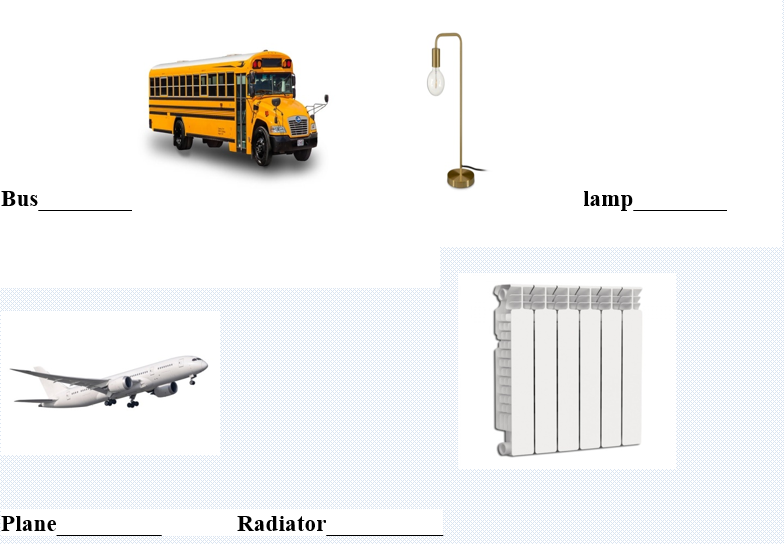
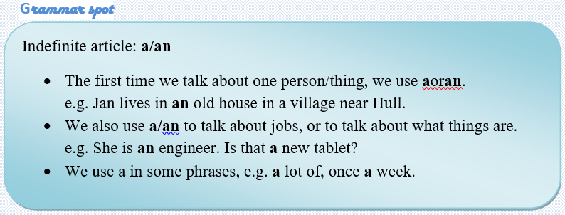
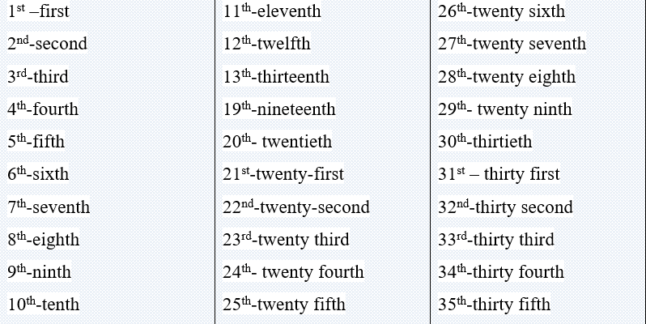
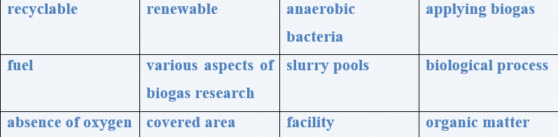

Nonrenewable energy comes from sources that will run out or will not be replenished in our lifetimes—or even in many, many lifetimes.
Most nonrenewable energy sources are fossil fuels: coal, petroleum, and natural gas. Carbon is the main element in fossil fuels. For this reason, the time period that fossil fuels formed (about 360-300 million years ago) is called the Carboniferous Period.
All fossil fuels formed in a similar way. Hundreds of millions of years ago, even before the dinosaurs, Earth had a different landscape. It was covered with wide, shallowseas and swampyforests.
Plants, algae, and plankton grew in these ancient wetlands. They absorbed sunlight and created energy through photosynthesis. When they died, the organisms drifted to the bottom of the sea or lake. There was energy stored in the plants and animals when they died.
Over time, the dead plants were crushed under the seabed. Rocks and other sediment piled on top of them, creating high heat and pressure underground. In this environment, the plant and animal remains eventually turned into fossil fuels (coal, natural gas, and petroleum). Today, there are huge underground pockets (called reservoirs) of these nonrenewable sources of energy all over the world.
Task1 Read the text and answer the questions
✔️ What is nonrenewable energy?
✔️ What energy sources are classified as renewable energy?
✔️ What is the main element in fossil fuels?
✔️ How did earth look like hundreds of millions of years ago?
✔️ What is called as underground pockets?
✔️ What helped to create high pressure and heat underground?
Task2 Vocabulary
Which fossil fuels are used to make these things work?

Task3 Grammar
Find the nonrenewable sources from the table.
Sunlight, coal, oil, wind, fossil fuels, natural gas, water, petrol, cause pollution, solar energy, nuclear energy, can be replaced, do not cause pollution;
Nonrenewable sources:
______________________________________________________________________________________________________________________________________________________________________________________________________

Task4 Listening
a) Listen and repeat.

b) Listen carefully and circle the correct numbers.
1. My office is on the (6th - 5th) floor.
2. The team from Shanghai won the (1st - 4th) place in the tennis match.
3. Jim was the (22nd — 27th) in the last marathon race.
4. Mary’s birthday is on the (25th - 29th) of September.
5. Our seats are in the (21st - 23rd) row.
6. The meeting will be on the (3rd - 1st) of April.
7. The theatre is on the (15th - 50th) Street.
8. People celebrated the (45th - 55th) anniversary of the school last year.
9. Alaska was the (5th - 50th) state in America.
10. The final exam is on the (25th - 26th) of June.
Task5 Writing
✔️ Learn the given lexical units.
✔️ Work in groups and explain the meanings of the given lexical units.
✔️ Try to use them in sentences.

Read the case brand give possible solutions
Biogas is recyclable, renewable and cleaning energy source that can be used directly as a fuel. As the technology is developing rapidly, progress in various aspects of biogas research has been considerably improved.
Biogas is produced naturally in the slurry pools themselves. It is a biological process in which anaerobic bacteria decompose organic matter in the absence of oxygen, and as a result, biogas is released.
However, there are some challenges. One problem is that the process cannot be controlled wholly. This is because the temperature needed by the bacteria may be in summer days but not during winter months.
The next challenge relating with biogas is that fresh slurry should be used as a separator that treats fresh slurry will work much better than the one that has been longer in the warehouse or the pool.
The other problem is whether in a small or big facility, there has to be a covered area, for example pond or digester-a system that can prevent gasses from releasing into the atmosphere and ammonia from escaping.
Suggest some effective ways of applying biogas and reducing the discomfort come from it.
What is biogas?
What is the problem?
How serious is this situation?
What is the cause of this problem?
How it is successfully solved?
What is the best way to apply biogas in practice?
Can you present some tips on how to use biogas in households without any negative effects?
Ortga